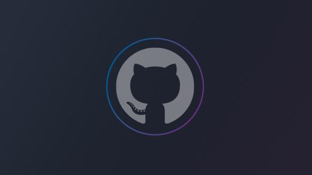

This site functions as a more interactive way to explore the various projects on my GitHub. The first project you will see is this very website! Built using Bootstrap and hosted on GitHub Pages. If you have any questions about the content of this site or anything outside of this site, feel free to contact me. If you wish to view source code, the button below links to my GitHub.

expected May 2023
I am studying at UNT in pursuit of a Bachelor's degree in computer science. Current coursework includes Data Structures and Algorithms, Systems Programming, and Computer Organization. With future coursework exploring concepts such as Software Engineering, Aritificial Inteligence, Cryptography, and others.
graduated December 2021
I recieved my Associate's degree in software programming from Dallas College. In completing my degree I studied concepts such as Web Design, Networking Technologies, System Analysis and Design, Linux, Programming Fundamentals, SQL, Fundamentals of Information Security and Advanced Java Programming.
When I am not working on my coursework or developing software, I can generally be found in the gym. I workout almost everyday, whether it be lifting weights or playing basketball. True to my Italian roots, I love to cook and eat. I also enjoy playing video games, I usually play on my desktop that I built myself.